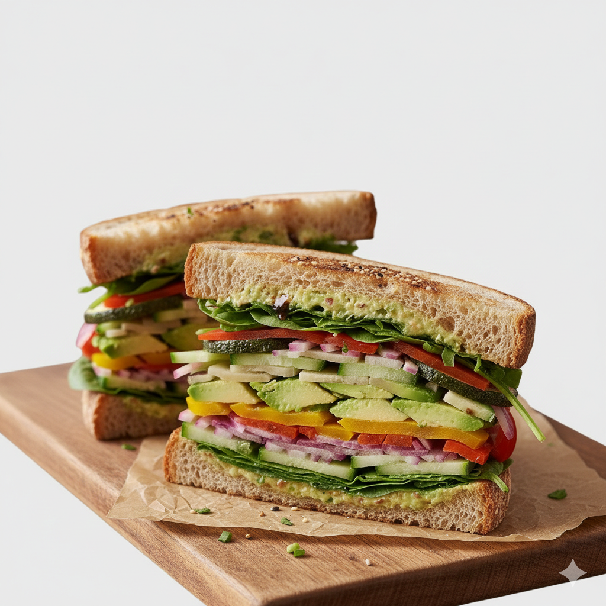

Home
Sandwich

Description
A classic vegetable sandwich is a celebration of freshness, layering crisp and colorful produce. Common ingredients like cucumber, tomato, and leafy greens provide a refreshing, crunchy base. It is often enhanced by creamy spreads like hummus or avocado to add richness and texture.
The choice of bread, whether toasted sourdough or whole grain, provides a hearty and warm foundation. Balancing sweet peppers with sharp red onions creates a complex flavor profile in every bite. This versatile meal remains a popular choice for those seeking a light, nutritious, and vibrant dish.
Ingredients
- Toasted multigrain bread
- Avocado or hummus spread
- Cucumber slices
- Red and yellow bell peppers
- Sliced red onion
- Zucchini ribbons
- Fresh spinach or arugula
- Tomato slices
- Balsamic glaze
- Salt and black pepper
Steps
- Toast two slices of multigrain bread until golden brown and firm. Generously coat one side of each slice with a creamy avocado spread or hummus. This layer acts as a moisture barrier and helps the vegetables stay in place.
- Place a bed of fresh spinach or arugula on the bottom slice of bread. Add a layer of cucumber slices followed by thin ribbons of zucchini. Stack the red and yellow bell peppers to give the sandwich height and color.
- Layer on the tomato slices and a few rings of red onion for a sharp bite. Drizzle a small amount of balsamic glaze over the vegetables for a tangy finish. Sprinkle with salt and black pepper before topping with the second slice of bread.